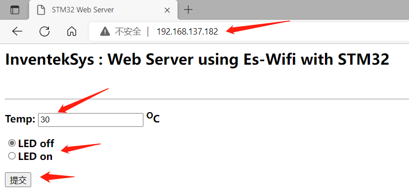
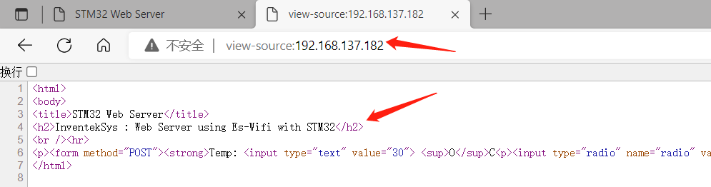
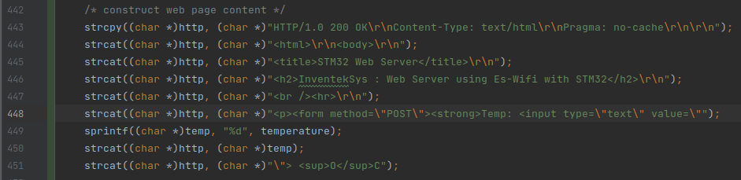

HTTP over WiFi#
TCP 协议是传输层协议，主要解决数据如何在网络中传输，而 HTTP 是应用层协议，主要解决如何包装数据。本章节将在开发板上的 WiFi 模块（已集成 TCP 协议）的基础上实现 HTTP 协议，从而实现 Web 接收开发板发送的温度传感器的数据，开发板接收 Web 端发送的控制 LED 灯命令。
实验目的#
了解 TCP 和 HTTP 协议的区别和联系
实现 HTTP over WiFi
准备工作#
手机或PC端的任意浏览器
硬件#
物联网实验箱
USB 数据线
软件#
CLion
STM32CubeMX
手机或PC端的任意浏览器
相关电路原理#
WiFi模块、LED 灯、温度传感器的相关电路原理与前面相关章节一致
引脚定义与相关API#
引脚定义
WiFi模块、LED 灯、温度传感器的引脚定义与前面相关章节一致
相关API
实验步骤#
STM32CubeMX创建工程#
以开发板为模板生成工程，保持默认设置，不修改任何引脚配置和时钟配置
代码编写及运行结果#
在 TCP over WiFi 章节的基础上，修改 mian.c 文件
相关宏定义
/* Private define ------------------------------------------------------------*/
/* USER CODE BEGIN PD */
#define SSID "LMX"
#define PASSWORD "luo010607"
#define PORT 80
#define TERMINAL_USE
#define WIFI_WRITE_TIMEOUT 10000
#define WIFI_READ_TIMEOUT 10000
#define SOCKET 0
#ifdef TERMINAL_USE
#define LOG(a) printf a
#else
#define LOG(a)
#endif
/* USER CODE END PD */
变量和函数声明
/* Private variables ---------------------------------------------------------*/
/* USER CODE BEGIN PV */
#if defined (TERMINAL_USE)
extern UART_HandleTypeDef hDiscoUart;
#endif /* TERMINAL_USE */
static uint8_t http[1024];
static uint8_t IP_Addr[4];
static int LedState = 0;
/* Private function prototypes -----------------------------------------------*/
#if defined (TERMINAL_USE)
#ifdef __GNUC__
/* With GCC, small printf (option LD Linker->Libraries->Small printf
set to 'Yes') calls __io_putchar() */
#define PUTCHAR_PROTOTYPE int __io_putchar(int ch)
#else
#define PUTCHAR_PROTOTYPE int fputc(int ch, FILE *f)
#endif /* __GNUC__ */
#endif /* TERMINAL_USE */
static WIFI_Status_t SendWebPage(uint8_t ledIsOn, uint8_t temperature);
static int wifi_server(void);
static int wifi_start(void);
static int wifi_connect(void);
static bool WebServerProcess(void);
/* USER CODE END PV */
修改 mian() 函数
/* USER CODE BEGIN 2 */
BSP_LED_Init(LED2);
/* WIFI Web Server demonstration */
#if defined (TERMINAL_USE)
/* Initialize all configured peripherals */
hDiscoUart.Instance = DISCOVERY_COM1;
hDiscoUart.Init.BaudRate = 115200;
hDiscoUart.Init.WordLength = UART_WORDLENGTH_8B;
hDiscoUart.Init.StopBits = UART_STOPBITS_1;
hDiscoUart.Init.Parity = UART_PARITY_NONE;
hDiscoUart.Init.Mode = UART_MODE_TX_RX;
hDiscoUart.Init.HwFlowCtl = UART_HWCONTROL_NONE;
hDiscoUart.Init.OverSampling = UART_OVERSAMPLING_16;
hDiscoUart.Init.OneBitSampling = UART_ONE_BIT_SAMPLE_DISABLE;
hDiscoUart.AdvancedInit.AdvFeatureInit = UART_ADVFEATURE_NO_INIT;
BSP_COM_Init(COM1, &hDiscoUart);
BSP_TSENSOR_Init();
printf("****** WIFI Web Server demonstration****** \n\n");
#endif /* TERMINAL_USE */
wifi_server();
/* USER CODE END 2 */
函数定义
/* USER CODE BEGIN 4 */
/**
* @brief Send HTML page
* @param None
* @retval None
*/
static int wifi_start(void)
{
uint8_t MAC_Addr[6];
/*Initialize and use WIFI module */
if(WIFI_Init() == WIFI_STATUS_OK)
{
LOG(("ES-WIFI Initialized.\n"));
if(WIFI_GetMAC_Address(MAC_Addr) == WIFI_STATUS_OK)
{
LOG(("> eS-WiFi module MAC Address : %02X:%02X:%02X:%02X:%02X:%02X\n",
MAC_Addr[0],
MAC_Addr[1],
MAC_Addr[2],
MAC_Addr[3],
MAC_Addr[4],
MAC_Addr[5]));
}
else
{
LOG(("> ERROR : CANNOT get MAC address\n"));
return -1;
}
}
else
{
return -1;
}
return 0;
}
int wifi_connect(void)
{
wifi_start();
LOG(("\nConnecting to %s , %s\n",SSID,PASSWORD));
if( WIFI_Connect(SSID, PASSWORD, WIFI_ECN_WPA2_PSK) == WIFI_STATUS_OK)
{
if(WIFI_GetIP_Address(IP_Addr) == WIFI_STATUS_OK)
{
LOG(("> es-wifi module connected: got IP Address : %d.%d.%d.%d\n",
IP_Addr[0],
IP_Addr[1],
IP_Addr[2],
IP_Addr[3]));
}
else
{
LOG((" ERROR : es-wifi module CANNOT get IP address\n"));
return -1;
}
}
else
{
LOG(("ERROR : es-wifi module NOT connected\n"));
return -1;
}
return 0;
}
int wifi_server(void)
{
bool StopServer = false;
LOG(("\nRunning HTML Server test\n"));
if (wifi_connect()!=0) return -1;
if (WIFI_STATUS_OK!=WIFI_StartServer(SOCKET, WIFI_TCP_PROTOCOL, 1, "", PORT))
{
LOG(("ERROR: Cannot start server.\n"));
}
LOG(("Server is running and waiting for an HTTP Client connection to %d.%d.%d.%d\n",IP_Addr[0],IP_Addr[1],IP_Addr[2],IP_Addr[3]));
do
{
uint8_t RemoteIP[4];
uint16_t RemotePort;
while (WIFI_STATUS_OK != WIFI_WaitServerConnection(SOCKET,1000,RemoteIP,&RemotePort))
{
LOG(("Waiting connection to %d.%d.%d.%d\n",IP_Addr[0],IP_Addr[1],IP_Addr[2],IP_Addr[3]));
}
LOG(("Client connected %d.%d.%d.%d:%d\n",RemoteIP[0],RemoteIP[1],RemoteIP[2],RemoteIP[3],RemotePort));
StopServer=WebServerProcess();
if(WIFI_CloseServerConnection(SOCKET) != WIFI_STATUS_OK)
{
LOG(("ERROR: failed to close current Server connection\n"));
return -1;
}
}
while(StopServer == false);
if (WIFI_STATUS_OK!=WIFI_StopServer(SOCKET))
{
LOG(("ERROR: Cannot stop server.\n"));
}
LOG(("Server is stop\n"));
return 0;
}
static bool WebServerProcess(void)
{
uint8_t temp;
uint16_t respLen;
static uint8_t resp[1024];
bool stopserver=false;
if (WIFI_STATUS_OK == WIFI_ReceiveData(SOCKET, resp, 1000, &respLen, WIFI_READ_TIMEOUT))
{
LOG(("get %d byte from server\n",respLen));
if( respLen > 0)
{
if(strstr((char *)resp, "GET")) /* GET: put web page */
{
temp = (int) BSP_TSENSOR_ReadTemp();
if(SendWebPage(LedState, temp) != WIFI_STATUS_OK)
{
LOG(("> ERROR : Cannot send web page\n"));
}
else
{
LOG(("Send page after GET command\n"));
}
}
else if(strstr((char *)resp, "POST"))/* POST: received info */
{
LOG(("Post request\n"));
if(strstr((char *)resp, "radio"))
{
if(strstr((char *)resp, "radio=0"))
{
LedState = 0;
BSP_LED_Off(LED2);
}
else if(strstr((char *)resp, "radio=1"))
{
LedState = 1;
BSP_LED_On(LED2);
}
temp = (int) BSP_TSENSOR_ReadTemp();
}
if(strstr((char *)resp, "stop_server"))
{
if(strstr((char *)resp, "stop_server=0"))
{
stopserver = false;
}
else if(strstr((char *)resp, "stop_server=1"))
{
stopserver = true;
}
}
temp = (int) BSP_TSENSOR_ReadTemp();
if(SendWebPage(LedState, temp) != WIFI_STATUS_OK)
{
LOG(("> ERROR : Cannot send web page\n"));
}
else
{
LOG(("Send Page after POST command\n"));
}
}
}
}
else
{
LOG(("Client close connection\n"));
}
return stopserver;
}
/**
* @brief Send HTML page
* @param None
* @retval None
*/
static WIFI_Status_t SendWebPage(uint8_t ledIsOn, uint8_t temperature)
{
uint8_t temp[50];
uint16_t SentDataLength;
WIFI_Status_t ret;
/* construct web page content */
strcpy((char *)http, (char *)"HTTP/1.0 200 OK\r\nContent-Type: text/html\r\nPragma: no-cache\r\n\r\n");
strcat((char *)http, (char *)"<html>\r\n<body>\r\n");
strcat((char *)http, (char *)"<title>STM32 Web Server</title>\r\n");
strcat((char *)http, (char *)"<h2>InventekSys : Web Server using Es-Wifi with STM32</h2>\r\n");
strcat((char *)http, (char *)"<br /><hr>\r\n");
strcat((char *)http, (char *)"<p><form method=\"POST\"><strong>Temp: <input type=\"text\" value=\"");
sprintf((char *)temp, "%d", temperature);
strcat((char *)http, (char *)temp);
strcat((char *)http, (char *)"\"> <sup>O</sup>C");
if (ledIsOn)
{
strcat((char *)http, (char *)"<p><input type=\"radio\" name=\"radio\" value=\"0\" >LED off");
strcat((char *)http, (char *)"<br><input type=\"radio\" name=\"radio\" value=\"1\" checked>LED on");
}
else
{
strcat((char *)http, (char *)"<p><input type=\"radio\" name=\"radio\" value=\"0\" checked>LED off");
strcat((char *)http, (char *)"<br><input type=\"radio\" name=\"radio\" value=\"1\" >LED on");
}
strcat((char *)http, (char *)"</strong><p><input type=\"submit\"></form></span>");
strcat((char *)http, (char *)"</body>\r\n</html>\r\n");
ret = WIFI_SendData(0, (uint8_t *)http, strlen((char *)http), &SentDataLength, WIFI_WRITE_TIMEOUT);
if((ret == WIFI_STATUS_OK) && (SentDataLength != strlen((char *)http)))
{
ret = WIFI_STATUS_ERROR;
}
return ret;
}
#if defined (TERMINAL_USE)
/**
* @brief Retargets the C library printf function to the USART.
* @param None
* @retval None
*/
PUTCHAR_PROTOTYPE
{
/* Place your implementation of fputc here */
/* e.g. write a character to the USART1 and Loop until the end of transmission */
HAL_UART_Transmit(&hDiscoUart, (uint8_t *)&ch, 1, 0xFFFF);
return ch;
}
#endif /* TERMINAL_USE */
#ifdef USE_FULL_ASSERT
/**
* @brief Reports the name of the source file and the source line number
* where the assert_param error has occurred.
* @param file: pointer to the source file name
* @param line: assert_param error line source number
* @retval None
*/
void assert_failed(uint8_t* file, uint32_t line)
{
/* USER CODE BEGIN 6 */
/* User can add his own implementation to report the file name and line number,
ex: printf("Wrong parameters value: file %s on line %d\r\n", file, line) */
/* USER CODE END 6 */
}
#endif
/**
* @brief EXTI line detection callback.
* @param GPIO_Pin: Specifies the port pin connected to corresponding EXTI line.
* @retval None
*/
void HAL_GPIO_EXTI_Callback(uint16_t GPIO_Pin)
{
switch (GPIO_Pin)
{
case (GPIO_PIN_1):
{
SPI_WIFI_ISR();
break;
}
default:
{
break;
}
}
}
/**
* @brief SPI3 line detection callback.
* @param None
* @retval None
*/
void SPI3_IRQHandler(void)
{
HAL_SPI_IRQHandler(&hspi);
}
/* USER CODE END 4 */
编译下载代码后，等待开发板连接上 wifi，然后在手机或 PC 端打开浏览器输入开发板的 IP 地址
网页上显示温度传感器的值，并且可控制开发板上 LED 的亮灭，实现了数据的收发

在浏览器顶部输入 view-source:http://192.168.137.182/，可查看页面源代码

可以看到，跟开发板中的代码是相对应的
